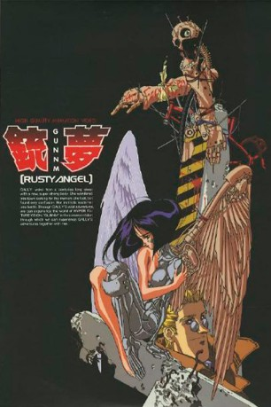

#11308 Battle Angel Alita OVA Rusty Angel / Tears Sign
Alternativ: Gunnm (Englischer Titel)
 
 IMDB-Wertung: 7.3 / 10
IMDB-Wertung: 7.3 / 10  Metascore: 0
Metascore: 0 
Die Welt ist in zwei Teile geteilt. In Zalem, die schwebende Stadt, in der nur die Reichen und Schönen wohnen und in den Bereich unter Zalem, wo der menschliche Abschaum lebt. Das sind Diebe, Invaliden, Gladiatoren, Kopfgeldjäger, Mörder und Cyborgs. Deren einziges Ziel ist es, soviel Geld zusammen zu bekommen, dass sie sich den Zutritt nach Zalem erkaufen können. Aber ein paar vereinzelte Wesen leben dort freiwillig, wie der geniale Mechaniker und Jäger Ido und die schöne Chiren, die nur auf eine Gelegenheit wartet, um wieder ins Paradies zurückkehren zu dürfen. Eines Tages findet Ido die noch brauchbaren Überreste eines Cyborgs - Gally. Er baut sie wieder zusammen, doch schon bald wird Gally von ihrer Vergangenheit eingeholt und offenbart ihr dunkles Geheimnis.
Jahr: 1993
Dauer: 29 Minuten
FSK: 16
Land: Japan Studio: KSSTonspuren:
Untertitel:
Auflösung: SD (640x478) Größe: 302 MB
Genre: Action, Thriller, Drama, Sci-Fi, Krimi, Animation/Trick
Regisseur: Hiroshi Fukutomi
Drehbuch: Yukito Kishiro, Akinori Endô
Soundtrack: Harada Soichiro, Kaoru Wada
Darsteller:
- Miki Itô als Gally
 Kappei Yamaguchi als Yugo
Kappei Yamaguchi als Yugo- Amanda Winn Lee als Gally (ADV Films dub)
 Mami Koyama als
Mami Koyama als  Shigeru Chiba als
Shigeru Chiba als - Kôji Totani als
- Takumi Yamazaki als
- Bryan Bounds als
- Matt Greenfield als
- Tamsin Hollo als
- Aaron Krohn als
- Tristan MacAvery als
 Stuart Milligan als
Stuart Milligan als - Larissa Murray als
 William Roberts als
William Roberts als - Doug Smith als
 Spike Spencer als
Spike Spencer als - Shunsuke Kariya als Ido
- Edward Glen als
- Ryûzaburô Ôtomo als
- Kazuhiko Kishino als
- Kazuyuki Sogabe als
- Rick Peeples als
- Michitaka Kobayashi als
- Naoki Makishima als
- Tomoko Maruo als
- Shinobu Satouchi als
- John Bull als
- Angel Fisher als
- John Guerrasio als
- Guil Lunde als
- Andy Orjuela als
- Lorraine Reyes als
- Dan Rockwell als
- Jennifer Rutherford als
- Kurt Stoll als
- Laura Chapman als
Datei: X:\HD-Anime-Collections\Battle Angel Alita\Battle Angel Alita OVA1 Rusty Angel (1993, FSK16, 640x478).mkv seit 18.06.2019
Festplatte: Gemischt-01+Anime
 Alle Filme aus Gruppe 'HD-Anime-Collections\Battle Angel Alita'
Alle Filme aus Gruppe 'HD-Anime-Collections\Battle Angel Alita'
- Battle Angel Alita OVA Rusty Angel / Tears Sign (der aktuelle Film)